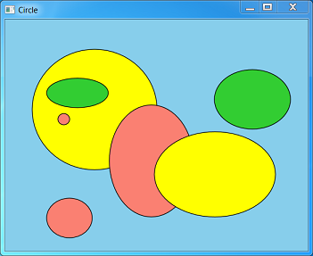

Let's combine everything that we have learned about user input to create a simple drawing program. Here is a screen shot of the program:

The user can draw ellipses in several different colors, and select, move, or delete ellipses. To keep the UI simple, the program does not let the user select the ellipse colors. Instead, the program automatically cycles through a predefined list of colors. The program does not support any shapes other than ellipses. Obviously, this program will not win any awards for graphics software. However, it is still a useful example to learn from. You can download the complete source code from Simple Drawing Sample. This section will just cover some highlights.
Ellipses are represented in the program by a structure that contains the ellipse data (D2D1_ELLIPSE) and the color (D2D1_COLOR_F). The structure also defines two methods: a method to draw the ellipse, and a method to perform hit testing.
struct MyEllipse
{
D2D1_ELLIPSE ellipse;
D2D1_COLOR_F color;
void Draw(ID2D1RenderTarget *pRT, ID2D1SolidColorBrush *pBrush)
{
pBrush->SetColor(color);
pRT->FillEllipse(ellipse, pBrush);
pBrush->SetColor(D2D1::ColorF(D2D1::ColorF::Black));
pRT->DrawEllipse(ellipse, pBrush, 1.0f);
}
BOOL HitTest(float x, float y)
{
const float a = ellipse.radiusX;
const float b = ellipse.radiusY;
const float x1 = x - ellipse.point.x;
const float y1 = y - ellipse.point.y;
const float d = ((x1 * x1) / (a * a)) + ((y1 * y1) / (b * b));
return d <= 1.0f;
}
};
The program uses the same solid-color brush to draw the fill and outline for every ellipse, changing the color as needed. In Direct2D, changing the color of a solid-color brush is an efficient operation. So, the solid-color brush object supports a SetColor method.
The ellipses are stored in an STL list container:
list<shared_ptr<MyEllipse>> ellipses;
[!Note]
shared_ptr is a smart-pointer class that was added to C++ in TR1 and formalized in C++0x. Visual Studio 2010 adds support for shared_ptr and other C++0x features. For more information, see the MSDN Magazine article Exploring New C++ and MFC Features in Visual Studio 2010.
Â
The program has three modes:
The user can switch between draw mode and selection mode by using the same keyboard shortcuts described in Accelerator Tables. From selection mode, the program switches to drag mode if the user clicks on an ellipse. It switches back to selection mode when the user releases the mouse button. The current selection is stored as an iterator into the list of ellipses. The helper method MainWindow::Selection returns a pointer to the selected ellipse, or the value nullptr if there is no selection.
list<shared_ptr<MyEllipse>>::iterator selection;
shared_ptr<MyEllipse> Selection()
{
if (selection == ellipses.end())
{
return nullptr;
}
else
{
return (*selection);
}
}
void ClearSelection() { selection = ellipses.end(); }
The following table summarizes the effects of mouse input in each of the three modes.
| Mouse Input | Draw Mode | Selection Mode | Drag Mode |
|---|---|---|---|
| Left button down | Set mouse capture and start to draw a new ellipse. | Release the current selection and perform a hit test. If an ellipse is hit, capture the cursor, select the ellipse, and switch to drag mode. | No action. |
| Mouse move | If the left button is down, resize the ellipse. | No action. | Move the selected ellipse. |
| Left button up | Stop drawing the ellipse. | No action. | Switch to selection mode. |
Â
The following method in the MainWindow class handles WM_LBUTTONDOWN messages.
void MainWindow::OnLButtonDown(int pixelX, int pixelY, DWORD flags)
{
const float dipX = DPIScale::PixelsToDipsX(pixelX);
const float dipY = DPIScale::PixelsToDipsY(pixelY);
if (mode == DrawMode)
{
POINT pt = { pixelX, pixelY };
if (DragDetect(m_hwnd, pt))
{
SetCapture(m_hwnd);
// Start a new ellipse.
InsertEllipse(dipX, dipY);
}
}
else
{
ClearSelection();
if (HitTest(dipX, dipY))
{
SetCapture(m_hwnd);
ptMouse = Selection()->ellipse.point;
ptMouse.x -= dipX;
ptMouse.y -= dipY;
SetMode(DragMode);
}
}
InvalidateRect(m_hwnd, NULL, FALSE);
}
Mouse coordinates are passed to this method in pixels, and then converted to DIPs. It is important not to confuse these two units. For example, the DragDetect function uses pixels, but drawing and hit-testing use DIPs. The general rule is that functions related to windows or mouse input use pixels, while Direct2D and DirectWrite use DIPs. Always test your program at a high-DPI setting, and remember to mark your program as DPI-aware. For more information, see DPI and Device-Independent Pixels.
Here is the code that handles WM_MOUSEMOVE messages.
void MainWindow::OnMouseMove(int pixelX, int pixelY, DWORD flags)
{
const float dipX = DPIScale::PixelsToDipsX(pixelX);
const float dipY = DPIScale::PixelsToDipsY(pixelY);
if ((flags & MK_LBUTTON) && Selection())
{
if (mode == DrawMode)
{
// Resize the ellipse.
const float width = (dipX - ptMouse.x) / 2;
const float height = (dipY - ptMouse.y) / 2;
const float x1 = ptMouse.x + width;
const float y1 = ptMouse.y + height;
Selection()->ellipse = D2D1::Ellipse(D2D1::Point2F(x1, y1), width, height);
}
else if (mode == DragMode)
{
// Move the ellipse.
Selection()->ellipse.point.x = dipX + ptMouse.x;
Selection()->ellipse.point.y = dipY + ptMouse.y;
}
InvalidateRect(m_hwnd, NULL, FALSE);
}
}
The logic to resize an ellipse was described previously, in the section Example: Drawing Circles. Also note the call to InvalidateRect. This makes sure that the window is repainted. The following code handles WM_LBUTTONUP messages.
void MainWindow::OnLButtonUp()
{
if ((mode == DrawMode) && Selection())
{
ClearSelection();
InvalidateRect(m_hwnd, NULL, FALSE);
}
else if (mode == DragMode)
{
SetMode(SelectMode);
}
ReleaseCapture();
}
As you can see, the message handlers for mouse input all have branching code, depending on the current mode. That is an acceptable design for this fairly simple program. However, it could quickly become too complex if new modes are added. For a larger program, a model-view-controller (MVC) architecture might be a better design. In this kind of architecture, the controller, which handles user input, is separated from the model, which manages application data.
When the program switches modes, the cursor changes to give feedback to the user.
void MainWindow::SetMode(Mode m)
{
mode = m;
// Update the cursor
LPWSTR cursor;
switch (mode)
{
case DrawMode:
cursor = IDC_CROSS;
break;
case SelectMode:
cursor = IDC_HAND;
break;
case DragMode:
cursor = IDC_SIZEALL;
break;
}
hCursor = LoadCursor(NULL, cursor);
SetCursor(hCursor);
}
And finally, remember to set the cursor when the window receives a WM_SETCURSOR message:
case WM_SETCURSOR:
if (LOWORD(lParam) == HTCLIENT)
{
SetCursor(hCursor);
return TRUE;
}
break;
In this module, you learned how to handle mouse and keyboard input; how to define keyboard shortcuts; and how to update the cursor image to reflect the current state of the program.
Â
Â